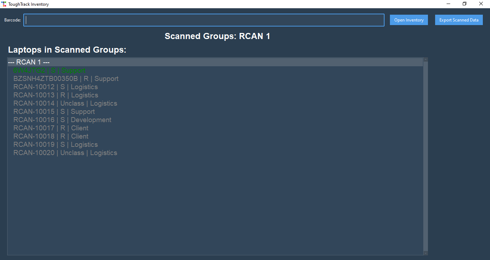
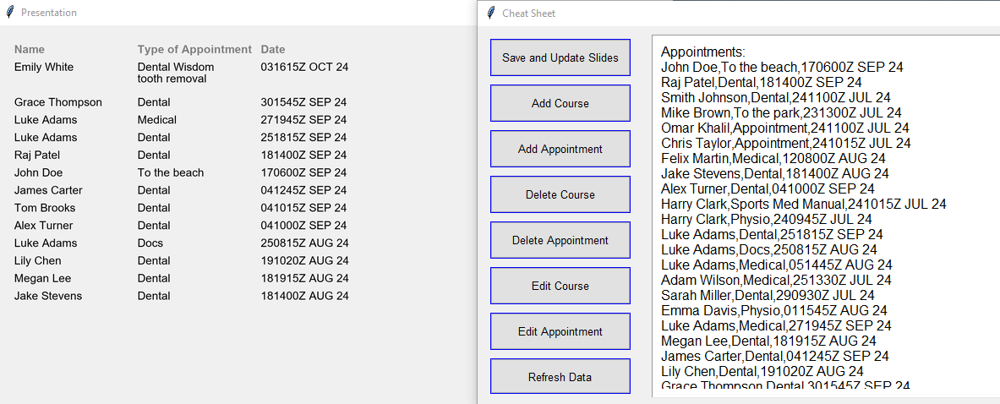
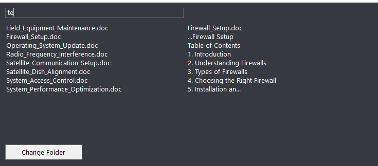
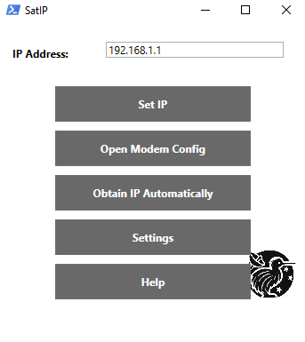

ToughTrack Inventory
ToughTrack Inventory is a barcode-based tracking system designed for military use, helping automate **502 checks** and streamline the management of serialized equipment. The system enables fast scanning, real-time updates, and automated reporting, ensuring every assigned item is accounted for.

Key Features:
- Barcode-Based Tracking: Quickly scan and verify assigned equipment.
- Automated 502 Checks: Instantly confirm gear assignments and detect missing items.
- Digital Logs & Reports: Maintain accurate records and export scanned inventory.
- Secure Data Handling: Encrypted storage and controlled user access.
- Real-Time Readiness: Live status updates for mission-critical equipment.
Use Case: Ideal for military units conducting 502 checks, logistics teams tracking serialized assets, and field operations requiring real-time inventory verification.
View on GitHub
Coding Projects
Discover my programming projects, including software, scripts, and tools that I've developed.
Schedule Display Manager
The Schedule Display Manager simplifies the process of managing and displaying course schedules and appointment times on a second screen. It's particularly useful in educational and training environments where keeping schedules up-to-date is essential.

Key Features:
- Course and Appointment Management: Store and organize schedules in a spreadsheet, with easy options to add, update, or remove entries, ensuring the display is always current.
- Dynamic Display: Present schedules in military Date-Time Group (DTG) format on a secondary screen, intuitive for military personnel.
- Auto-Deletion: Automatically remove entries 24 hours after their scheduled time, keeping the display uncluttered.
- User-Friendly Interface: A GUI on a laptop stand allows users to seamlessly add new courses and appointments, with real-time updates to the slideshow.
Use Case: Ideal for military training facilities, conference rooms, or any environment where schedules need to be displayed and updated frequently.
DefenderAssist NZ
DefenderAssist NZ is an advanced tool designed to help users efficiently search through the contents of .doc files stored within a directory of folders. This application is particularly useful for users who need to find specific information quickly within a large number of documents.

Key Features:
- Content Search: Search for specific words or phrases within .doc files, with results highlighted where the searched terms appear.
- Quote Display: Results are displayed as clickable quotes, showing the context in which search terms appear, helping users quickly determine relevance.
- Document Access: Click on a quote to open the corresponding document directly, facilitating easy access for further reading or editing.
- Efficiency: Handles large directories of documents, making it a powerful tool for legal professionals, researchers, and others working with extensive document libraries.
Use Case: Perfect for legal firms, research institutions, and other organizations that need to manage and search through large volumes of text documents.
SatIP
SatIP is a non-classified tool designed for managing and troubleshooting the any Satellite Router. This application provides essential functionalities for setting up and managing satellite communications equipment, making it easier for users to configure network settings and access the router's configuration interface.

Key Features:
- IP Address Configuration: Set a static IP address for your network adapter, providing greater control over network configurations, crucial in stable environments.
- Modem Configuration Access: Directly access the web interface of the iDirect iQ Desktop Satellite Router, simplifying adjustments and troubleshooting.
- DHCP Toggle: Enable DHCP, allowing the router to automatically obtain an IP address, useful in dynamic network environments.
- Settings Management: Adjust default IP settings and modem configuration URLs through the application’s settings interface, ensuring flexibility and adaptability.
- Help and Support: Includes a help section with setup and troubleshooting guides, providing essential information to resolve common issues.
Use Case: Essential for managing satellite communications equipment, particularly in remote or field environments where quick and reliable network setup is critical.